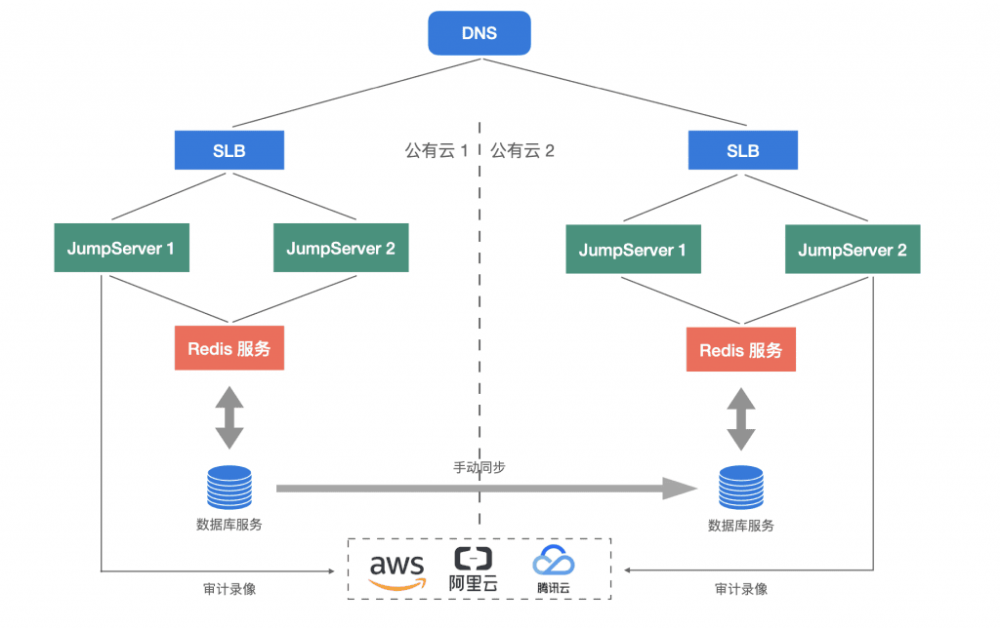

神策数据（Sensors Data），全称为神策网络科技（北京）有限公司，是国内专业的大数据分析和营销科技服务提供商，为企业提供神策营销云、神策分析云、神策数据根基平台三大产品方案，并通过全渠道的数据采集和全域用户ID打通，实现全场景多维度的数据分析，帮助企业实现数字化经营。
立足于大数据及用户行为分析市场，神策数据的业务现已覆盖互联网、品牌零售、金融、企业服务、汽车等30多个主要行业，付费客户达到2,000余家。公司总部位于北京，在上海、深圳、合肥、武汉、成都、西安、中国台北等地均拥有本地化的服务团队，覆盖全国以及东南亚市场，为各地客户提供与营销和大数据相关的咨询、解决方案和专业服务。
身处分布式的现实业务场景，如何高效、安全地对各地IT资产进行安全运维，是神策数据运维团队所面临的挑战。
出于IT资产安全运维及访问控制的需要，神策数据很早就选择了JumpServer堡垒机开源版作为其主要的安全运维审计系统。
2021年年中，神策数据从JumpServer开源版切换至JumpServer企业版，借助JumpServer原厂专业支持服务从开源的早期版本迁移至JumpServer企业版的最新版本，同时实现了多项目、多网络场景下IT资源的安全访问和资产管理。
安全运维的痛点
作为JumpServer的忠实用户，神策数据的运维团队已经把JumpServer当作IT运维管理的主入口。不过，在前期使用JumpServer开源版本的过程中，神策数据的运维团队也遇到了一些现实的问题与挑战：
1. 无商业支持，升级存在潜在安全风险
神策数据很早就使用了JumpServer开源版，并且根据需要进行版本升级迭代，升级过程由运维团队人员根据手册进行操作，但在升级操作过程中由于存在一些不确定性因素，存在升级失败的风险，进一步问题如果无法及时解决，有影响资产运维的隐患存在；
2. 兼容多种资产认证方式的需求难以满足
根据项目要求的不同，神策数据每个项目的资源登录认证方式也不一样。截止到JumpServer企业版本上线前，有包括账号密码认证、密钥认证、Token认证、多因子认证等在内的六种资产登录认证方式。而开源版本支持的认证方式有限。因此，如何兼容更多的认证方式，同时保证这些认证信息的安全性以及访问资产时的高效性，也是运维团队亟待解决的问题之一；
3. 资产运维安全审计需要稳定性的保障
伴随着公司业务的发展，以及IT系统运维对堡垒机依赖程度的不断增加，系统稳定运行的重要性也在不断攀升。神策数据运维团队逐渐感受到，通过开源社区获取技术支持的方式在专业性和响应速度方面难以支撑企业环境大规模运维的需要，因此希望能够通过专业化的服务支持，确保JumpServer堡垒机在企业内部长期稳定地运行。
堡垒机选型思路
基于JumpServer开源版本的长期使用经验和运维过程中遇到的一些实际问题，神策数据运维部门在经过一系列市场调研和选型之后，对JumpServer企业版进行了一系列的内部测试，发现其企业版的核心功能能够满足企业对堡垒机的核心诉求：
■ 组织管理
JumpServer企业版支持组织管理的功能，能够实现多租户管理和权限隔离。这样一来，公司的每个项目都可以设置一个组织，将所有的用户、资产、授权等分别进行更细粒度的设置和管理，能够很好地解决多项目管理不统一的问题；
■ 网域网关
JumpServer提供网域网关功能，即使是网络隔离的资产也可以通过网域网关功能实现流量转发，从而可以通过堡垒机对隔离网段中的资产进行统一的访问，并且形成资产访问的统一门户，提高日常运维的效率以及安全性，满足了公司在不同网络环境下资源统一访问的需求；
■ 远程应用和数据库管理
JumpServer企业版支持远程应用（RemoteApp）和数据库管理功能。数据库支持线上数据库的命令行、GUI访问和本地数据库终端访问三种方式，同时通过RemoteApp功能还可以兼容运维人员自己习惯使用的应用软件来进行日常操作，解决了数据库权限管控和应用操作审计的问题；
■ 认证信息管理
JumpServer支持多种认证信息的托管，包括Linux操作系统、Windows操作系统、数据库、Kubernetes集群以及Windows远程应用等。同时，JumpServer还支持多种不同资产登录的方式，既支持登录资产时代填用户名、密码以及密钥的方式，也支持特定项目要求手动输入登录信息的访问方式。这就解决了公司在多项目场景中对资产认证信息管理的问题。
JumpServer堡垒机的搭建过程
神策数据借助JumpServer企业版所提供的原厂企业级支持服务，成功搭建并迁移至JumpServer企业版，使得公司运维管理平台的整体能力得到了显著提升：
■ 使用公有云服务搭建JumpServer
因神策数据业务的需要，最终决定在公有云上部署JumpServer企业版，并使用了公有云上的RDS（关系型数据库服务）、负载均衡服务、和对象存储服务，加强了整体平台的易扩展性和易维护性；
■ 数据平滑迁移
JumpServer企业版搭建完成后，原先开源版中的数据迁移工作就成为了后续工作的重点。在JumpServer客户成功团队的支持下，在短期内就完成了JumpServer企业版的数据迁移，整体过程平滑高效，切实保证了迁移过程中数据的完整性和一致性，用户体验也实现了无缝过渡。
JumpServer堡垒机的部署架构
基于上述核心功能以及公司多项目、多网络隔离的特点，神策数据最终选择的是在公有云上部署JumpServer主备节点的技术架构。
得益于JumpServer软件模块化的设计理念，其每个功能模块都支持独立部署。考虑到在公有云环境中拥有丰富的PaaS服务，神策数据将JumpServer堡垒机中的部分模块功能通过公有云中的PaaS服务进行发布。具体的实现内容如下：
■ 在数据库部分使用了公有云的RDS（关系型数据库）服务。这样一方面JumpServer所使用的数据库符合了安全加固方面的要求，另一方面公司的运维团队也可以根据后期的性能需求，快速地进行数据库性能升级，提高了JumpServer在实际使用以及运维过程中的灵活性和安全性；
■ 录像文件存储在公有云的对象存储服务上。这样一方面减少了录像文件对本地存储空间的占用，节省了本地磁盘的存储空间，另一方面充分利用了对象存储的特性，可以支持不断增加的录像文件，还可以对数据存储进行分级处理，降低存储成本。同时由于应用了基于公司安全基线规则的访问控制，很好地保证了保存录像的安全性。

JumpServer部署架构特点
伴随着业务的扩张，神策数据的客户逐步覆盖全国各地及海外地区。为了给当地客户提供高效快捷的运维服务，神策数据计划在公有云的主要区域各部署一套JumpServer节点，通过分布式的部署方式实现各区域资产权限的统一管理，以及资产就近的网络访问。
这样一来，在提高运维效率和使用体验的同时，还保证了权限规则的规范性和一致性。与此同时，JumpServer分布式部署架构中的节点也可以根据需要进行灵活增减，同步匹配神策数据业务发展的实际需要。
相信随着JumpServer功能的持续迭代和神策数据运维团队的深入使用，JumpServer堡垒机在未来可以适配其业务场景越来越多的需求，在提高运维便利性和安全性方面发挥越来越重要的作用。